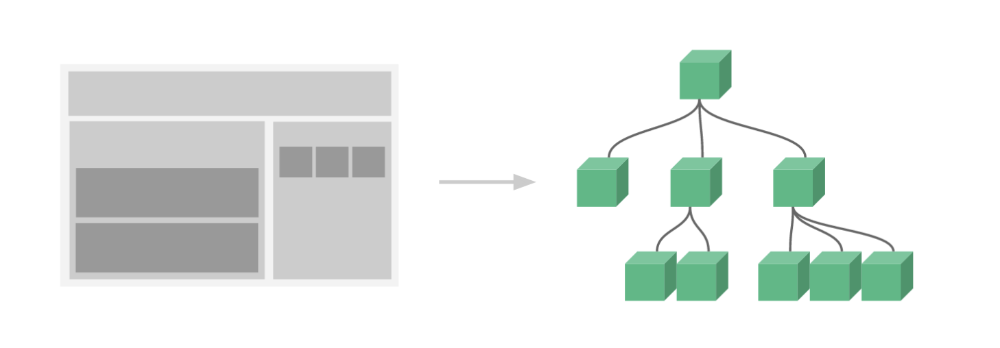

本文内容
基本示例
// 定义一个名为 button-counter 的新组件
Vue.component('button-counter', {
data: function () {
return {
count: 0
}
},
template: '<button v-on:click="count++">You clicked me {{ count }} times.</button>'
})
组件是可复用的 Vue 实例，且带有一个名字：在这个例子中是 <button-counter>。我们可以在一个通过 new Vue 创建的 Vue 根实例中，把这个组件作为自定义元素来使用：
<div id="components-demo">
<button-counter></button-counter>
</div>
new Vue({ el: '#components-demo' })
因为组件是可复用的 Vue 实例，所以它们与 new Vue 接收相同的选项，例如 data、computed、watch、methods 以及生命周期钩子等。仅有的例外是像 el 这样根实例特有的选项。
组件的复用
你可以将组件进行任意次数的复用：
<div id="components-demo">
<button-counter></button-counter>
<button-counter></button-counter>
<button-counter></button-counter>
</div>
每个组件都会各自独立维护它的 count。因为你每用一次组件，就会有一个它的新实例被创建。
data 必须是一个函数
一个组件的 data 选项必须是一个函数，因此每个实例可以维护一份被返回对象的独立的拷贝：
data: function () {
return {
count: 0
}
}
说白了，这个是函数式，无副作用的要求
如果 Vue 没有这条规则，点击一个按钮就可能影响到其它所有实例
组件的组织
通常一个应用会以一棵嵌套的组件树的形式来组织：

例如，你可能会有页头、侧边栏、内容区等组件，每个组件又包含了其它的像导航链接、博文之类的组件。
为了能在模板中使用，这些组件必须先注册以便 Vue 能够识别。这里有两种组件的注册类型：全局注册和局部注册。至此，我们的组件都只是通过 Vue.component 全局注册的：
Vue.component('my-component-name', {
// ... options ...
})
全局注册的组件可以用在其被注册之后的任何 (通过 new Vue) 新创建的 Vue 根实例，也包括其组件树中的所有子组件的模板中。
通过 Prop 向子组件传递数据
如果我们不能向组件传递数据，那么组件的行为就无法被我们控制，所以就有 props 机制向组件传递数据了
Vue.component('blog-post', {
props: ['title'],
template: '<h3>{{ title }}</h3>'
})
一个组件默认可以拥有任意数量的 prop，任何值都可以传递给任何 prop。在上述模板中，你会发现我们能够在组件实例中访问这个值，就像访问 data 中的值一样。
一个 prop 被注册之后，你就可以像这样把数据作为一个自定义特性传递进来：
<blog-post title="My journey with Vue"></blog-post>
<blog-post title="Blogging with Vue"></blog-post>
<blog-post title="Why Vue is so fun"></blog-post>
props: ['title'] 表示我们的这个组件，接收一个参数，参数名称叫做 title，这个参数通过标签的属性的方式传递进来
单个根元素
组件不能像下面这样没有根元素
<h3>{{ title }}</h3>
<div v-html="content"></div>
而应该使用一个根元素把其它元素包裹起来
<div class="blog-post">
<h3>{{ title }}</h3>
<div v-html="content"></div>
</div>
监听子组件事件
有时候我们需要子组件告知父组件一些事件，例如父组件是一个跟组件，掌管了所有的data数据，我们点击子组件上的放大按钮，子组件要告知父组件去更新 data，将字体大小放大
这种模式就是：子组件 emit 某些事件，父组件监听子组件的事件，然后进行相应更改
new Vue({
el: '#blog-posts-events-demo',
data: {
posts: [/* ... */],
postFontSize: 1
}
})
<div id="blog-posts-events-demo">
<div :style="{ fontSize: postFontSize + 'em' }">
<blog-post
v-for="post in posts"
v-bind:key="post.id"
v-bind:post="post"
v-on:enlarge-text="postFontSize += 0.1"
></blog-post>
</div>
</div>
子组件
Vue.component('blog-post', {
props: ['post'],
template: `
<div class="blog-post">
<h3>{{ post.title }}</h3>
<button v-on:click="$emit('enlarge-text')">
Enlarge text
</button>
<div v-html="post.content"></div>
</div>
`
})
子组件监听到 click 事件，马上通过 $emit 这个 API 发送一个自定义的事件，同时父组件也在子组件上监听这个事件，于是知道要去更改字体大小了。
使用事件抛出一个值
有时候，我们可能还要在事件里添加一些值，比如说我们点击放大时可能还有一个参数，通知放大多少倍
<button v-on:click="$emit('enlarge-text', 0.1)">
Enlarge text
</button>
<blog-post
...
v-on:enlarge-text="postFontSize += $event"
></blog-post>
我们通过 $event 可以访问这个参数
使用事件抛出多个值
<button v-on:click="$emit('enlarge-text', 0.1, 0.2)">
Enlarge text
</button>
<blog-post
...
v-on:enlarge-text="log"
></blog-post>
methods: {
log(arg1,arg2) {
alert(arg1+arg2);
}
}
抛出多个值时，我们可以通过在监听事件里，传入一个事件处理函数，将会将所有的值依次传入到这个函数里
在组件上使用 v-model
<input v-model="searchText">
等价于
<input
v-bind:value="searchText"
v-on:input="searchText = $event.target.value"
>
当用在组件上时，v-model 则会这样：
<custom-input
v-bind:value="searchText"
v-on:input="searchText = $event"
></custom-input>
为了让它正常工作，这个组件内的 <input> 必须：
- 将其
value特性绑定到一个名叫value的 prop 上 - 在其
input事件被触发时，将新的值通过自定义的input事件抛出
写成代码之后是这样的：
Vue.component('custom-input', {
props: ['value'],
template: `
<input
v-bind:value="value"
v-on:input="$emit('input', $event.target.value)"
>
`
})
要点：
- 自定义组件里的input接收到input事件时，传递一个自定义的 input 事件出去，值就是输入的值
- 那么此时父组件就会接受到这个自定义的 input 事件，并且将我们绑定的值更新，更新的值传递给了子组件的 value 属性
- 所以子组件必须要将 props 设置为 value
通过插槽分发内容
和 HTML 元素一样，我们经常需要向一个组件传递内容，像这样：
<alert-box>
Something bad happened.
</alert-box>
Vue 的插槽
Vue.component('alert-box', {
template: `
<div class="demo-alert-box">
<strong>Error!</strong>
<slot></slot>
</div>
`
})
这样，我们传递给 <alert-box> 的 innerHTML Something bad happened. 就取代了子组件里的 <slot>
动态组件
<!-- 组件会在 `currentTabComponent` 改变时改变 -->
<component v-bind:is="currentTabComponent"></component>
在上述示例中，currentTabComponent 可以包括
- 已注册组件的名字，或
- 一个组件的选项对象
其实这里相当于是这个标签了，等于是一个动态的标签
<currentTabComponent></currentTabComponent>
这种用法在 table 之类的对子标签有严格要求的地方很合适
<table>
<blog-post-row></blog-post-row>
</table>
这个将会导致错误，table 里不能有这种未知标签
<table>
<tr is="blog-post-row"></tr>
</table>
正确的做法
如果我们在单文件组件里使用的话，是没有这个限制的